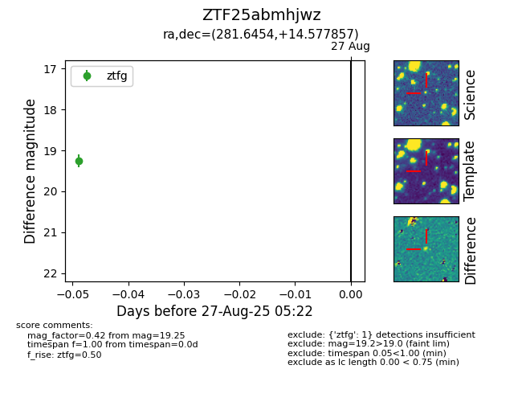

Target ZTF25abmhjwz at 2025-08-27 05:22, see:
FINK: fink-portal.org/ZTF25abmhjwz
Lasair: lasair-ztf.lsst.ac.uk/objects/ZTF25abmhjwz
ALeRCE: alerce.online/object/ZTF25abmhjwz
alt names
ZTF25abmhjwz (ztf,fink)
coordinates:
equatorial (ra, dec) = (281.6454,+14.57786)
galactic (l, b) = (45.4402,+7.64412)
photometry
last ztfg=19.25
1 ztfg detections
